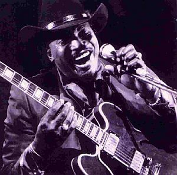
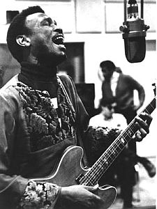
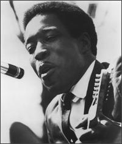
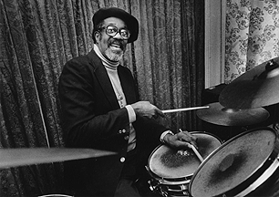
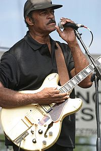
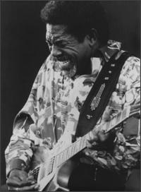
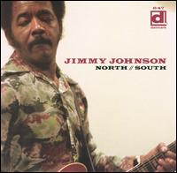

|
|
|
|
Дабы оживить свое повествование, я задал несколько вопросов известному московскому блюзмену Михаилу Мишурису. Он любезно согласился ответить мне на них. За что ему отдельное большое спасибо. Реплики Михаила будут встречаться в тексте, они выделены курсивом.
Явление в блюзе под названием West-Side Blues довольно условное. Название такое произошло из-за того, что молодые музыканты Otis Rush, Magic Sam и Buddy Guy выступали большей частью в западной части Города Ветров. Но очевидно, этого недостаточно, чтобы обозначить целый пласт музыки. Что-то новаторское должно быть в самом жанре. А новаторским было вот что. Представьте себе чикагскую блюзовую сцену до появления этого жанра: оставшиеся реликты довоенной эпохи вроде Big Bill Broonzy, Muddy Waters, играющий со своим ансамблем выверенно, как швейцарские часы, Howlin' Wolf, Robert Nighthawk, Hound Dog Taylor, Elmore James – это по сути все тот же грубый дельта-блюз. А ведь музыка не стоит на месте – T-Bone Walker – это и блюз, и порой джаз. Песни B. B. King, Albert King, Guitar Slim – занимают верхушки ритм-н-блюзовых хит-парадов. Это полностью городская музыка, она позволяет "заигрывать" с другими жанрами, черпать из них ритмы, гармонии, мелодии. Чикагский блюз по сути не имел ничего этого. Я думаю, что молодые двадцатилетние парни, какими были на момент зарождения этого стиля Otis Rush, Magic Sam и Buddy Guy, не очень-то хотели играть близкую им, но устаревшую музыку. West-Side Blues явился предтечей блюз-рока (например, Clapton увлекался копированием гитарных партий и соло Otis Rush и др.), что, возможно, и обусловило то, что эта музыка никогда уже не будет прежней, окончательно избавится от своих деревенских корней. Михаил Мишурис так описывает это явление: "Возможно и правда уэст-сайдский блюз - это начало конца "того самого" блюза. Мне кажется, это тогдашняя молодёжь так резвилась - скрестила блюз с популярной музыкой того времени (фанк, ритм-н-блюз и позже даже психоделический рок). Биби и Альберт Кинги вводили какие-то модные штучки скорее по воле продюсеров, а молодая поросль делала это по велению сердца. Этот стиль блюза уже не деревенский, а самый настоящий городской - возникший в городе и впитавший всю музыку, которую можно в мегаполисе услышать".
Насколько я могу судить, пик развития и популярности West Side Blues пришелся на период с середины 50-х годов до середины 70-х годов двадцатого века. Именно тогда были записаны основные альбомы стиля. В течение всего этого времени он впитывал в себя всю окружающую музыку. Но начнем по порядку, с 1956 года, когда Otis Rush записал песню "I Can't Quit You, Baby". Вообще-то ростки урбанизации чикагского блюза, шедшей от БиБи Кинга и Альберта Кинга, уже можно было наблюдать в игре Jody Williams (к сожалению, малоизвестного чикагского гитариста) и Earl Hooker. Влияние Jody Williams особенно хорошо заметно в композиции Отиса Раша "All Your Love" (1960): характерный ориентированный на румбу ритм, переходы из минора в мажор, пассажи и соло, встречающиеся на протяжении всей композиции. Эти приемы уходят корнями в "Lucky Lou" (1957), записанную Jody Williams. К счастью, в блюзе это довольно распространенная практика, да и Otis Rush сделал и сам более, чем достаточно, чтобы попасть в пантеон величайших блюзовых исполнителей.

Отис Раш родился в 1934 году в Филадельфии. В 1948 году он переехал в Чикаго, где в клубе "Занзибар" на выступлении Мадди Уотерса он решил заниматься музыкой профессионально. Согласно истории, рассказанной самим Отисом, он сидел на подоконнике своей квартиры и, открыв окно, играл на гитаре. Однажды владельцу клуба, расположенного по соседству, понадобился гитарист для выступлений. Он поднялся в квартиру Раша и спросил: "Где этот парень, что торчал в окне с гитарой все это время?". "Так я попал к нему в клуб, устроился на сцене и начал играть. В конце выступления он сказал, чтобы я приходил и завтра. Мы договорились о концертах в течение 4 ночей. Он платил мне 5 долларов за концерт. Вот так я бросил свою дневную работу", - говорит Отис Раш. Однажды Вилли Диксон притащил с собой в клуб своего приятеля, итальянца Эли Тоскано – владельца Cobra records. Они были впечатлены игрой Раша и договорились с ним о записи, для которой Вилли специально напишет песню. Так на свет появилась композиция "I Can't Quit You, Baby" - первый хит Раша и бестселлер этого лейбла, добравшийся до 6-го места в тогдашних хит-парадах ритм-н-блюза в Billboard.Следующим его хитом стал минорный блюз "My Love Will Never Die" - явление по тем временам неслыханное, т.к. большинство блюзов исполнялось на основе мажорного лада. По правде говоря, это была тоже песня авторства Вилли Диксона, он даже записал ее со своим Big Three Trio в 1952 году, но хитом эта песня стала исключительно в исполнении Раша. Отис часто говорил, что уважал Диксона, как никого другого, да и этот период в звукозаписи был наиболее успешным для Отиса. Так он отзывался об Эли Тоскано: "Он был номер один для меня, потому что разрешал мне записываться так, как я хочу! Он был всегда готов идти к тебе навстречу. Его студия была маленькая, как щель в стене, как гараж. Но это было уютное место с хорошим звуком". Раш записал огромное количество хитов для Кобры, среди которых Double Trouble, My Love Will Never Die, All Your Love (I Miss Loving), но к сожалению, в 1960 году лейбл обанкротился и Раш подписал контракт с тогдашним гигантом блюза - "Чесс". Для этого лейбла он записал еще один свой хит "So Many Roads, So Many Trains", но потом опять был вынужден сменить лейбл.
На волне интереса к нему молодых блюз-рокеров под руководством Блумфилда и Гравентиса (из Paul Butterfield Blues Band) в 1969 году Раш записывает альбом "Mourning In The Morning", но, на мой взгляд, запись вышла слишком агрессивной, громкой, совсем не в духе классического Отиса Раша. Один из самых важных своих альбомов "Right Place, Wrong Time" Раш записывает в 1971 году. Но ему катастрофически не везет с лейблами, потому альбом выходит в свет в 1975 году. Запись эта состоит из композиций исполненных в духе классического Вест-Сайд блюза, а также материала, вдохновленного одним из кумиров Отиса – Альбертом Кингом. Есть на альбоме и песня молодого и талантливого белого музыканта Tony Joe White – "Rainy Night In Georgia", учитывая характерную манеру пения Отиса и деликатную игру – это жемчужина альбома!
Вот что говорит Михаил Мишурис о знаменитейшей композиции Раша "Double Trouble": "Эта песня - яркий пример, когда блюз - не просто тупая перестановка 3-х аккордов, а песня, которую надо знать для того чтобы адекватно сыграть. Налицо оригинальное гитарное вступление вместо импровизации, а также нечто вроде "бриджа" в начале, середине и в конце композиции: это место почему-то подавляющее большинство интерпретаторов опускают, как несущественное. А как раз эти "штучки" обеспечивают моментальную узнаваемость песни. Обратите внимание на отсутствие "соло" как такового. Под "соло" я подразумеваю гитарную импровизацию на пару "квадратов". Примерно так он играет ее со времен записи на лейбле "Кобра".
Уберите эти особенности, исказите оригинальную мелодию, добавьте квадратов 8 бессмысленной (или даже осмысленной - неважно) гитарной импровизации и получите заурядный и презануднейший блюз в миноре. Может быть, поэтому ни одна из множества позднейших версий по эмоциональной выразительности сильно не дотягивает до исполнения Раша (имхо, естественно).

Мне посчастливилось дважды видеть Раша в Чикаго. Первый раз на большой сцене "House of Blues" и это было просто хорошо. А второй раз в небольшом клубе - это было лучшее, что я когда либо слышал "вживую". И дело не в магии имени, не в легендарности этого музыканта, просто вот такой он, блюз Отиса Раша".Otis Rush остается активно гастролирующим блюзменом и по сей день, он один из королей блюза, один из самых влиятельных гитаристов. Но годы неудач в звукозаписи оставили, к сожалению, довольно скудную дискографию артиста.
Magic Sam был еще одним хит-мейкером лейбла "Cobra" и создателем West-Side блюза. Sam Magnett родился в штате Миссиссиппи в 1937 году. В 1950 году он переехал в Чикаго, где познакомился с Syl Johnson, у которого взял несколько гитарных "уроков", а также с харпером Shakey Jake Harris, который становится музыкальным наставником для Сэма и всячески способствовал его карьерному росту. В 1957 году Мэджик Сэм подписал контракт с "Коброй" и выпустил свой первый сингл для этого лейбла "All Your Love", а следом еще несколько успешных песен. Но в 1959 в его карьере наступил перерыв – его забрали в армию, Мэджик Сэм был не очень здоровым человеком, потому он отказался служить, за что его поместили, согласно закону, в тюрьму. Отсидев полгода за решеткой, он вернулся на сцену, но многие отметили его пошатнувшееся психическое здоровье. К счастью, Сэм успел записать 2 альбома для молодого лейбла "Delmark", прежде, чем в декабре 1969 года он умер от разрыва сердца.

Buddy Guy родился в 1936 году в Луизиане, и с детства его влекло к музыке. Музыкантами, оказавшими на него влияние в этом возрасте, были: T-Bone Walker, John Lee Hooker и Lightnin' Hopkins. Первым же электрогитаристом, которого он увидел вживую, был Lightnin'Slim. Но тем, кто оказал наибольшее влияние на игру молодого Бадди Гая, был – Eddie "Guitar Slim" Jones со своей композицией "Things That I Used To Do". В конце 50-х Гай подался в Чикаго. Сам Бадди так описывает это: "Я слышал, что вполне можно работать днем, а по ночам ходить на концерты Мадди и прочих, играть с ними. И что тут, на Севере, я могу заработать денег гораздо больше, чем где-либо на Юге. Но этому не суждено было случиться, я не нашел вообще никакой работы".У Buddy Guy уже был опыть игры в группе, он достаточно много выступал и играл в городе Батон Руж вместе с харпером Raful Neal. Он был готов покорить Чикаго первыми аккордами своей игры, но этого не случилось. Более того, он послал в студию Чесс демо-запись, сделанную на радиостанции Батон Ружа, но главный блюзовый лейбл не проявил вообще никакого интереса к ней. Но Бадди все же повезло – он повстречал Мадди Уотерса, который был доволен игрой Гая настолько, что взял под свое крыло. О своих первых записях Бадди говорил так: "Мэджик Сэм сказал, на какой мне сесть автобус, пообещал встретить и представить Эли Тоскано, владельцу "Кобры". Они уже ждали меня. В общем, я взял гитару и принялся играть "Sweet Little Angel" B.B. King'а. Сэм и говорит Эли: "Послушай, ты лучше запиши его сейчас! Только послушай его!". Тоскано последовал совету Меджик Сэма и сделал записи Гая на дочернем лейбле "Кобры" - Artistic. Первая из них вышла в 1958 году – "Sit And Cry The Blues" - очередное творение арт-директора "Кобры" Вилли Диксона. Так у Чикаго появились 3 короля West-Side блюза.
После этого музыкальная карьера Гая пошла в гору – он много записывается как сессионный гитарист, в том числе и для "Чесс", выступает и выпускает синглы! Где-то же в это время он знакомится с потрясающим харпером Junior Wells, и вместе они начинают экспериментировать, развивая West-Side блюз, скрещивая его с фанком и другими популярными тогда черными жанрами музыки. Они продолжат записываться друг у друга на альбомах и часто выступать вместе вплоть до смерти Веллса в 1998.
Я попросил Михаила Мишуриса указать несколько ключевых записей классического West Side блюза: ""West Side Soul" - Magic Sam; "Hoodoo Man Blues" - Junior Wells; Otis Rush - любой сборник 50-х-60х; Buddy Guy - сборник записей для фирмы "Chess" 50-х-60-х".
Наверняка West-Side блюз не превратился бы в самостоятельный стиль исключительно благодаря усилиям троицы, про которую я писал выше. В создании этого музыкального направления принимало участие достаточно большое количество музыкантов. Басист Jack Meyers был одним из первых бас-гитаристов блюза и именно он принял участие во многих классических записях этого стиля, в первую очередь Buddy Guy и Junior Wells. Вообще, в то время на сцене появилось довольно большое количество бас-гитаристов, которые поначалу выступали в составе ансамблей других звезд, но сами заслужили признание и известность не меньше, чем их лидеры: Bob Stroger, Willie Kent, Johnny B. Gayden, J.W. Williams. Знаменитый Phil Upchurch тоже принимал участие в некоторых классических записях блюза того времени в качестве бас-гитариста. Всем им не в меньшей степени, чем флагманам West-Side блюза, приходилось подстраиваться под новые ритмы плюс, в добавок к этому, многие из них все еще продолжали играть в составе ансамблей более классического блюза.

Нельзя не упомянуть и барабанщиков, чьи партии тоже помогли создать именно тот узнаваемый ритмический рисунок West-Side блюза, часто с заимствованиями из джаза, фанка и другой актуальной тогда музыки. Первым и старейшим из них, я считаю, был потрясающий Fred Below. Фред родился в Чикаго в 1926 году, но не стоит забывать, что Город Ветров – это не только один из блюзовых центров Америки, тут в то время активно развивался и джаз - би боп! Потому изначально Below был джазовым барабанщиком, изучал игру на перкуссии в соответствующей школе Roy C. Knapp'a. Но позже его представили Литтл Уолтеру, так и началось его погружение в блюз. Именно он был одним из первых виртуозов игры блюза на барабанах. Фреда можно встретить почти на всех классических записях чикагского блюза, в том числе и West-Side. Clifton James тоже играл не только в составе ансамблей Muddy Waters и Bo Didley, его игру можно услышать и на многих классических чессовских записях нового стиля. Ray Killer Allison, Casey Jones были уже барабанщиками совсем новой формации, в их игре уже чувствовалось много оттенков фанка и рока.Множество харперов, помимо Джуниора Уеллса, тоже принимало участие в создании этой музыки (им посвящена другая моя заметка, более подробную информацию о них ищите там): Lester Davenport, Billy Boy Arnold, Carey Bell, James Cotton, даже Sonny Boy Williamson II играл на ранних записях Бадди Гая!
Мне сложно выявить пианистов, которые бы сформировали какой-то новый стиль или как-то радикально изменили бы свою игру во время революции West-Side блюза, я имею ввиду его классический период - середину 50-х – начало 60-х годов 20-го века. На записях часто можно слышать игру Little Brother Montgomery, который годился в деды молодым реформаторам, чессовских звездных аккомпаниаторов-пианистов: Otis Spann, Lafayette Leake (этот клавишник, на мой взгляд, незаслуженно обойден вниманием любителей блюза – его фортепианные партии едва ли не самые интересные среди всех пианистов блюза), Leonard Caston. В большинстве своем пианисты были проверенными Вилли Диксоном мастерами, музыкантами, с которыми он или играл, или записывал их в составе других ансамблей.
Знаменитый чессовский саксофонист и аранжировщик Gene Barge также принял участие в формировании фирменного звука West-Side блюза, зачастую приправленного духовой секцией на манер, как это делали Би Би или Альберт Кинги.

Новый блюз был богат звуком, тщательно и интересно аранжирован, для такой музыки часто требовался второй гитарист. В большинстве классических записей того времени, можно встретить Mighty Joe Young, Jimmy Dawkins или Matt Guitar Murphy. Игра этих музыкантов не менее интересна, чем Buddy Guy, Otis Rush или Magic Sam. Просто, пожалуй, это не их конек - находиться в центре внимания. Но прислушайтесь к их работе: первый альбом Jimmy Dawkins выпущенный на "Делмарке" в 1969 году; альбомы 70-х Mighty Joe Young, вслушайтесь в его игру на записях Коко Тейлор; обратите внимание на партии Мэтта Мерфи на классических ранних записях Бадди Гая. Тогда вы сможете по достоинству оценить их огромный вклад в развитие этой музыки.Я спросил Михаила Мишуриса, кого из музыкантов West-Side блюза он имел возможность наблюдать вживую, ведь часто игра музыкантов на альбомах и на сцене – это разные вещи: "Видел я Otis Rush, Magic Slim, Buddy Guy, Mighty Joe Young. Отчасти, Syl Johnson, кажется, тоже уэст-сайд. Вообще, это, наверное, очень условная классификация. Отис Раш - это нечто потрясающее было. Настоящий чикагский блюз в тесном пространстве настоящего чикагского клуба. Бадди Гай - это прежде всего шоу. На большой площадке очень убедителен. А вот, Янг там же как-то потерялся. Magic Slim очень понравился в Москве. Тоже такое настоящее нечто. У него есть такие своеобразные "диско-шаффлы", вот это, мне кажется, и есть тот самый уэст-сайд".
Блюз пришел в город из хлопковых полей, из деревень дельты Миссиссиппи, там эта музыка игралась в тесных и душных кабачках – Juke Joints. Но после перемещения блюза на север подобного рода заведения и клубы стали появляться и в Чикаго. Одним из самых знаменитых и культовых мест был клуб "Theresa's Lounge", который появился на карте Чикаго в 48 году 20-го века. Заведение так названо в честь хозяйки Theresa McLaurin Needham. В этом клубе выступало множество тогдашних звезд блюза, но больше всего он известен тем, что это место облюбовали для своих выступлений Buddy Guy и Junior Wells. В дискографии последнего есть даже парочка альбомов, записанных именно в этом заведении - "On Tap" и "Live at Theresa's Lounge". Этот клуб был даже занесен во множество справочников и путеводителей по Чикаго, а его хозяйка посмертно была введена в "Blues Foundation's Hall of Fame" в 2001-м году.

В 70-е годы Вест-Сайд блюз постепенно трансформировался в то, что позднее начнут называть Modern Electric Blues: музыку на основе блюза, фанка, рока, ритм-н-блюза, соул. Возможно, он уже не будет звучать как прежде – он полон импровизаций, сложных аранжировок, он мимикрировал под окружающую его музыкальную ситуацию. Но что немаловажно, на мой взгляд, блюз не утратил искренности и чувства. Такая музыка интересовала молодежь, она была актуальна и свежа, но в то же время на теряла связи с корнями. Многие музыканты дебютировали в звукозаписи в конце 60-х-начале 70-х годов часто благодаря маленьким, в то время, лейблам вроде Alligator или Delmark. Дискография последнего лейбла вообще представляет собой потрясающую подборку Вест-Сайд блюза, многие артисты этого стиля дебютировали именно при помощи его владельца Боба Коэстера, среди самых известных: Junior Wells, Luther Allison, Jimmy Dawkins и др.Luther Allison родился в 1939 году в Арканзасе, в раннем детстве его семья переехала в Чикаго, где он благодаря тому, что учится в одном классе с сыном Мадди Уотерса, вплотную знакомится с музыкой Города Ветров. Так он становится аккомпаниатором многих тогдашних звезд блюза: Freddie King, Otis Rush, Magic Sam и др. Свой дебютный альбом он записывает на лейбле "Делмарк". Запись представляет собой подборку классики блюза, ритм-н-блюза, а, например, семиминутная "Bloomington Closer" - это вообще образец того, куда может двинуться блюз, если скрестить его с фанком. После этого он подписывает контракт с лейблом "Motown", который гораздо больше ассоциируется с фанком и соул. На этом лейбле он записывает, пожалуй, свой лучший альбом – "Bad News Is Coming". Затем, в 70-х, когда интерес к блюзу несколько стихает, он перебирается жить в Европу, в Париж, где его музыка оказывается гораздо более востребованной. Но на волне интереса к блюзу в конце 80-х-90-х он возвращается в Америку, где записывает ряд успешных альбомов на крупном блюзовом лейбле "Аллигатор". Он снова популярен, но, к сожалению, в 1997 году умирает от рака легких.
Музыку, которую можно отнести к Вест-Сайд блюзу, но все же ориентированную на более традиционное звучание, играли в то время: Magic Slim и Eddie "The Chief" Clearwater, Luther "Guitar Junior" Johnson. Последний долгое время выступал и записывался в ансамбле Мадди Уотерса, потому проявить себя как соло-музыкант смог уже только после того, как ансамбль перестал существовать. Но альбомы, записанные Джонсоном в 90-е и в начале 21-го века – это тот самый сплав соул, фанка и блюза, который и называется "Вест-Сайд блюз".
Наиболее интересными блюзменами, из тех, что появились на большой блюзовой сцене в 70-х, на мой взгляд, являются Eddie C. Campbell и Son Seals. Оба они, Campbell на дебютном "King Of The Jungle", а Seals на "Midnight Son", продемонстрировали, насколько интересным может быть блюз, пропитанный фанковыми грувами.

Я сомневаюсь, можно ли наверняка отнести музыку, которую играли Fenton Robinson и Jimmy Johnson к West-Side блюзу, но она создавалась в Чикаго и несомненно эти музыканты попали под влияние течений Города Ветров. Их блюз был слишком деликатным и мелодичным, чтобы ограничиваться какими-то стилистическими рамками. Альбомы Джимми Джонсона конца 70-х начала 80-х годов двадцатого века – это вообще интереснейший коктейль из джаза, соул, фанка и блюза, приправленный удивительно тонкой и чуткой игрой Джимми. А об игре Фентона Робинсона президент лейбла "Аллигатор" Брюс Иглауэер говорил, что она больше ориентирована на внимательного слушателя, чем на танцы.За пределами моего текста осталось множество интересных музыкантов, которых можно отнести к этому жанру: Mel Brown, Phil Guy, Johnny B. Moore, Andrew Brown, Lurie Bell и др, но все же я надеюсь, что ознакомил читателя с таким революционным течением блюза, как West-Side блюз, и расставил маячки, по которым читателю будет проще передвигаться при изучении этой музыки.
В завершение я бы хотел посоветовать послушать несколько альбомов, чтобы немного расширить список, предложенный Михаилом Мишурисом.
Blues.Ru - Новости | Музыканты | Стили | CD Обзор | Концерты | Live Band | Форум